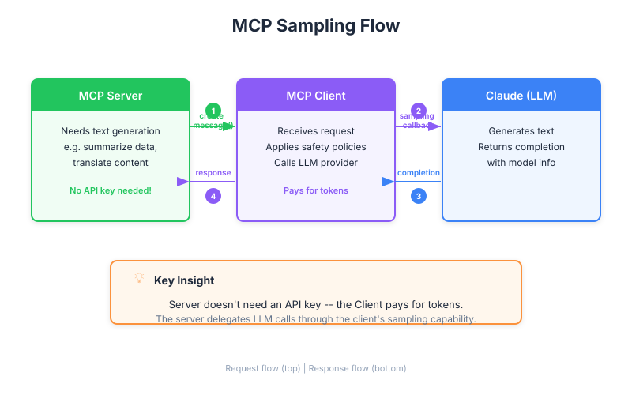

| Item | Detail |
|---|---|
| Exam Domain | D2 — Tool Design & MCP Integration (18%) |
| Task Statements | 2.3 (MCP server capabilities), 2.4 (client-server communication patterns) |
| Source | model-context-protocol-advanced-topics / 01-sampling-and-notifications / Lesson 03 |
Sampling lets an MCP server borrow the client's AI brain instead of bringing its own, shifting cost and complexity to whoever connects.

Imagine you run a tourist information desk (MCP server) in Tokyo. A French tourist (user) arrives with their own personal translator (MCP client + Claude). Instead of hiring your own French translator, you simply speak to the tourist's translator and ask them to relay your message.
| Role | Analogy | MCP Equivalent |
|---|---|---|
| Tourist info desk | Provides local knowledge | MCP server (domain logic) |
| Tourist's translator | Relays and translates | MCP client (calls Claude) |
| The tourist | Wants answers | End user |
The desk never needs to learn French. The tourist's translator handles it. This is sampling.
Sampling fundamentally changes the business model of MCP servers:
Key Insight
Sampling is the "BYOB (Bring Your Own Brain)" model for AI tools. It removes the biggest barrier to building and sharing MCP servers: the cost of LLM API calls.
Your team is building a public MCP server that searches academic papers and summarizes findings. Consider two approaches:
| Factor | Direct API (Server pays) | Sampling (Client pays) |
|---|---|---|
| Cost per user | Server bears all AI costs | Zero to server |
| API key management | Server needs key, rotation, security | None — client handles it |
| Model control | Server picks the model | Client picks the model |
| Scalability concern | Every new user increases server bill | Server costs are flat (compute only) |
| User trust | User trusts server with their data | User's own client processes data |
PM Decision: For a public-facing research tool, sampling is clearly superior — it eliminates the unit economics problem of "more users = more cost."
| Dimension | Sampling Wins | Direct API Wins |
|---|---|---|
| Cost ownership | Server has zero AI cost | Server controls quality |
| Model consistency | — | Guaranteed model version |
| Setup complexity | Lower for server | Lower for client |
| Public distribution | Ideal | Impractical at scale |
| Latency | — | Fewer network hops |
| Compliance | Client controls data flow | Server controls data flow |
The server never touches the AI directly. It is a requester, not a caller.
As a PM, flag these with your team:
| Front | Back |
|---|---|
| What business problem does MCP sampling solve? | Eliminates AI API costs for server operators by shifting LLM calls to the client |
| In sampling, who holds the API key? | The client — the server never needs one |
| Why is sampling ideal for open-source MCP servers? | Each user's client pays for their own AI usage, so the server author has no ongoing API cost |
| What is the main risk of sampling for product quality? | The client controls model selection — the server cannot guarantee which model is used |
| Who initiates a sampling request? | The server initiates it, asking the client to call Claude on its behalf |
| Can a client refuse a sampling request? | Yes — the client has full discretion to accept, modify, or reject sampling requests |
| What is the "BYOB" analogy for sampling? | "Bring Your Own Brain" — each client brings their own AI capability to the server |
| When should a PM recommend against sampling? | When the product requires guaranteed model behavior, specific model versions, or server-side audit logging of AI calls |